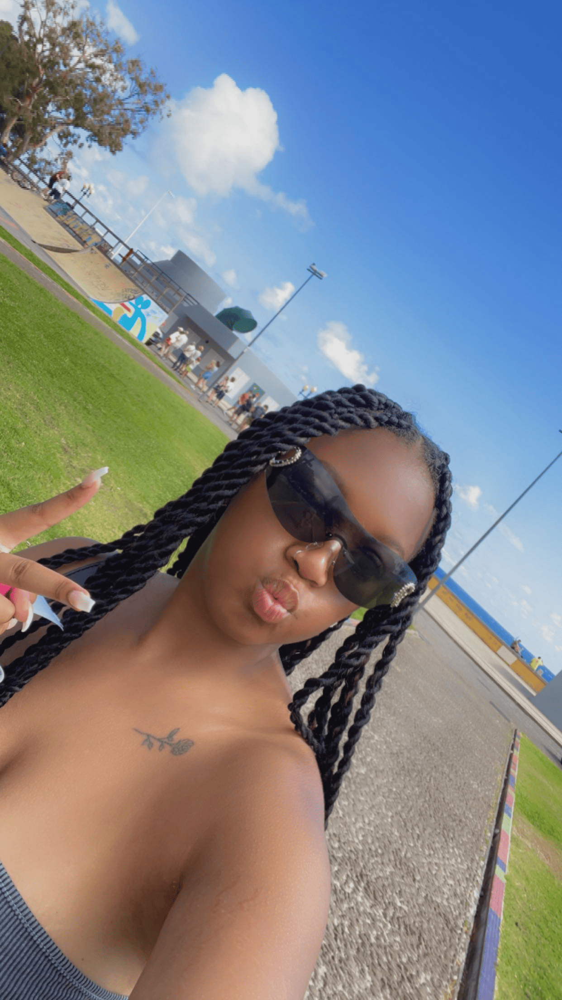
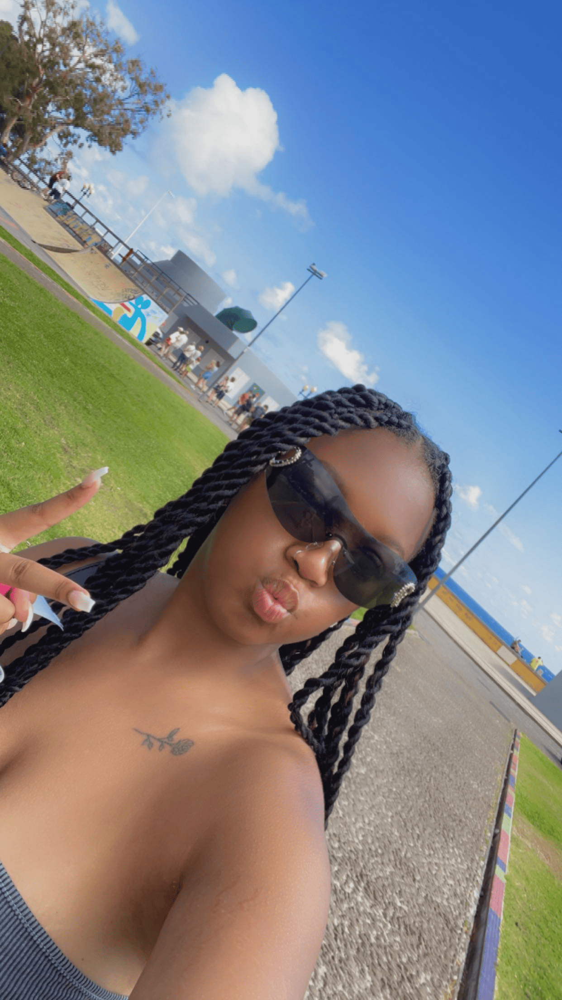

Het doel van de website
Ik wilde graag met jullie delen waarom ik besloten heb om een website te maken waar ik mijn vakantie-ervaringen en foto's kan delen. Dit is een project waar ik enorm enthousiast over ben, en ik dacht dat het leuk zou zijn om jullie hierin mee te nemen. Reizen is voor mij niet alleen een hobby, maar een ware passie die mijn leven op zoveel manieren heeft verrijkt. Elke keer als ik een nieuwe bestemming ontdek of terugkeer naar mijn favoriete plekjes, ervaar ik een gevoel van vrijheid en avontuur dat ik graag met anderen wil delen. Het is alsof de wereld zich voor me opent, vol nieuwe mogelijkheden en onvergetelijke momenten.
Door mijn ervaringen vast te leggen op deze website, hoop ik niet alleen mijn eigen herinneringen te bewaren, maar ook anderen te inspireren om de wereld om hen heen te verkennen. Elke reis is een kans om te leren, te groeien en verbinding te maken met mensen uit verschillende culturen. Of je nu op zoek bent naar nieuwe reisbestemmingen, handige tips voor het plannen van je volgende avontuur, of gewoon wilt genieten van mooie foto's die de sfeer en schoonheid van verschillende plekken vastleggen, ik hoop dat mijn verhalen en beelden je een stukje van mijn avontuur laten meebeleven.
 

Ik wil jullie graag meenemen op mijn reis, met tips over verborgen pareltjes die vaak over het hoofd worden gezien, lokale gerechten die je absoluut moet proberen en de cultuur van de plekken die ik heb bezocht. Van de bruisende straten van grote steden tot de rustige, afgelegen stranden, ik zal mijn persoonlijke ervaringen delen die jullie hopelijk inspireren om zelf ook deze mooie plekken te ontdekken.
Reizen opent je ogen voor de wereld om je heen en helpt je om je horizon te verbreden. Het leert je om buiten je comfortzone te treden, en dat is waar de magie gebeurt. De gesprekken met lokale bewoners, het proeven van nieuwe smaken en het ontdekken van nieuwe tradities maken elke reis uniek en onvergetelijk. Laten we samen deze reis maken, onze verhalen uitwisselen en elkaar aanmoedigen om nieuwe avonturen aan te gaan.
Ik geloof dat we van elkaars ervaringen kunnen leren en elkaar kunnen inspireren om de wereld verder te verkennen. De informatie die ik met jullie deel, is niet alleen bedoeld als een gids, maar ook als een aanmoediging om jullie eigen dromen na te jagen. Dus pak je koffers, laat je angsten achter en laten we samen de wonderen van de wereld ontdekken! Bedankt voor jullie steun en ik hoop dat jullie net zo enthousiast zijn als ik om deze avontuurlijke reis samen te maken!